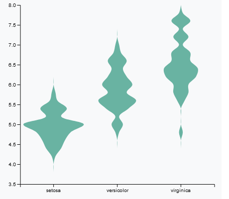

D3
Características
Es considerada como una de las bibliotecas de visualización JavaScript de código abierto más potentes. Su ecosistema incluye docenas de plugins y otras bibliotecas que se han creado sobre D3js. Por otro lado, cuenta con una comunidad muy activa y mucha documentación que te ayudará a empezar rápido. D3 cumple con los estándares web de W3C y soporta prácticamente todos los navegadores modernos. A pesar de que no incluye ningún tipo de gráfico prefabricado de serie, ofrece muchísimos ejemplos y funcionalidades muy útiles del tipo selecciones "Entrar y Salir", un proceso de depuración de errores sencillo y transiciones potentes. La industria Big Data está en pleno auge y como consecuencia, en paralelo, la visualización de datos crece en importancia. Existen muchísimas bibliotecas para hacer gráficas pero pocas destacan tanto como D3.js. Funciona con elementos SVG y canvas para renderizar gráficos, tablas y visualizaciones dinámicas en la web. Su uso es totalmente gratuito. Supone una forma muy avanzada de renderizar datos en el navegador y es muy recomendable echarle un vistazo para entender bien todo lo que ofrece.
Analisis
Jerarquías
Ejemplo

<!DOCTYPE html>
< meta charset="utf-8" >
<script src="https://d3js.org/d3.v4.js" >
</script >
< div id="my_dataviz"> </div>
<script >
// set the dimensions and margins of the graph
var margin = {top: 10, right: 30, bottom: 30, left: 40},
width = 460 - margin.left - margin.right,
height = 400 - margin.top - margin.bottom;
// append the svg object to the body of the page
var svg = d3.select("#my_dataviz")
.append("svg")
.attr("width", width + margin.left + margin.right)
.attr("height", height + margin.top + margin.bottom)
.append("g")
.attr("transform",
"translate(" + margin.left + "," + margin.top + ")");
// Read the data and compute summary statistics for each specie
d3.csv("https: //raw.githubusercontent.com/holtzy/D3-graph-gallery/master/DATA/iris.csv", function(data) {
// Build and Show the Y scale
var y = d3.scaleLinear()
.domain([ 3.5,8 ]) // Note that here the Y scale is set manually
.range([height, 0])
svg.append("g").call( d3.axisLeft(y) )
// Build and Show the X scale. It is a band scale like for a boxplot: each group has an dedicated RANGE on the axis.
//This range has a length of x.bandwidth
var x = d3.scaleBand()
.range([ 0, width ])
.domain(["setosa", "versicolor", "virginica"])
.padding(0.05) // This is important: it is the space between 2 groups. 0 means no padding. 1 is the maximum.
svg.append("g")
.attr("transform", "translate(0," + height + ")")
.call(d3.axisBottom(x))
// Features of the histogram
var histogram = d3.histogram()
.domain(y.domain())
// Important: how many bins approx are going to be made? It is the 'resolution' of the violin plot
.thresholds(y.ticks(20))
.value(d => d)
// Compute the binning for each group of the dataset
var sumstat = d3.nest() // nest function allows to group the calculation per level of a factor
.key(function(d) { return d.Species;})
.rollup(function(d) { // For each key..
input = d.map(function(g) { return g.Sepal_Length;}) // Keep the variable called Sepal_Length
bins = histogram(input) // And compute the binning on it.
return(bins)
})
.entries(data)
// What is the biggest number of value in a bin? We need it cause this value will have a width of 100% of
//the bandwidth
var maxNum = 0
for ( i in sumstat ){
allBins = sumstat[i].value
lengths = allBins.map(function(a){return a.length;})
longuest = d3.max(lengths)
if (longuest > maxNum) { maxNum = longuest }
}
// The maximum width of a violin must be x.bandwidth = the width dedicated to a group
var xNum = d3.scaleLinear()
.range([0, x.bandwidth()])
.domain([-maxNum,maxNum])
// Add the shape to this svg!
svg
.selectAll("myViolin")
.data(sumstat)
.enter() // So now we are working group per group
.append("g")
// Translation on the right to be at the group position
.attr("transform", function(d){ return("translate(" + x(d.key) +" ,0)") } )
.append("path")
// So now we are working bin per bin
.datum(function(d){ return(d.value)})
.style("stroke", "none")
.style("fill","#69b3a2")
.attr("d", d3.area()
.x0(function(d){ return(xNum(-d.length)) } )
.x1(function(d){ return(xNum(d.length)) } )
.y(function(d){ return(y(d.x0)) } )
// This makes the line smoother to give the violin appearance. Try d3.curveStep to see the difference
.curve(d3.curveCatmullRom)
)
})
</script >